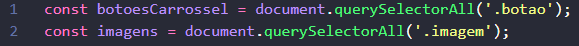
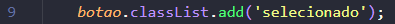
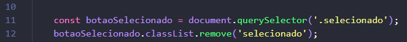
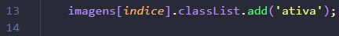

- Criar um carrossel de imagens funcional usando JavaScript puro.
- Ao clicar em um botão, a imagem correspondente deve aparecer.
- Somente uma imagem e um botão ficam ativos por vez.
💾 Clique aqui para baixar o HTML, CSS e as imagens.
👉 Clique no link acima e baixe tudo na sua pasta. O arquivo é .rar.
🖱 Clique com o botão direito sobre o arquivo e selecione "Extrair arquivos", depois clique em OK.
Após isso, uma pasta será criada com todos os arquivos.
👉 Um exercício de lógica e manipulação do DOM com interações visuais.
👉 Vamos usar uma lógica muito semelhante à que utilizamos no exercício do card com JavaScript.
- Como selecionar todos os botões do carrossel?
👉 querySelectorAll retorna uma lista de todos os elementos que possuem a classe informada. Essa lista permite acessar cada botão ou imagem pelo índice (como se fosse um array).
👉 Exemplo: document.querySelectorAll('.botao') seleciona todas as tags (elementos) com a classe "botao".
👉 No nosso caso, na primeira linha passamos os seis botões para a variável botoesCarrossel.
👉 Na segunda linha, fazemos o mesmo com as imagens.
- Use forEach para percorrer os botões
👉 forEach é um método usado para percorrer listas (como as que vêm do querySelectorAll). Para cada botão, ele executa uma função.
👉 addEventListener é usado para reagir a eventos. Neste caso, estamos ouvindo o evento "click" em cada botão.
👉 Quando o botão for clicado, a função dentro do addEventListener será executada.
- Dentro do clique:
👉 querySelector retorna o primeiro elemento que possui a classe informada. Aqui, ele pega o botão que está atualmente com a classe ativa.
👉 Usamos classList.remove() para remover a classe "selecionado" dele. Repare que não usamos o ponto (.) antes do nome da classe, pois estamos nos referindo à classe em si, e não ao seletor.
👉 Quando falamos de seletores, usamos o ponto (.) na frente; quando falamos de classes, não usamos o ponto.
- Adicione a classe "selecionado" ao botão que foi clicado.
👉 O botão clicado está representado pelo parâmetro botao. Ao usar classList.add, ele ganha o estilo visual de selecionado.
- Selecione a imagem atual que está com a classe "ativa".
👉 Assim como fizemos com os botões, removemos a classe da imagem atual, que está sendo exibida.
- Use o índice do botão clicado para acessar a imagem correspondente.
👉 A imagem correta está na mesma posição (índice) que o botão clicado.
👉 Assim, usamos imagens[indice] para pegar a imagem certa e classList.add('ativa') para exibi-la.
👉 Você teve acesso ao CSS e deve ter entendido o segredo por trás de exibir as imagens. Crie uma página do zero, organizando os elementos de forma diferente do exemplo. Além do carrossel, faça alguma melhoria simples, um acréscimo.
💰 Este desafio vale 10 moedas.